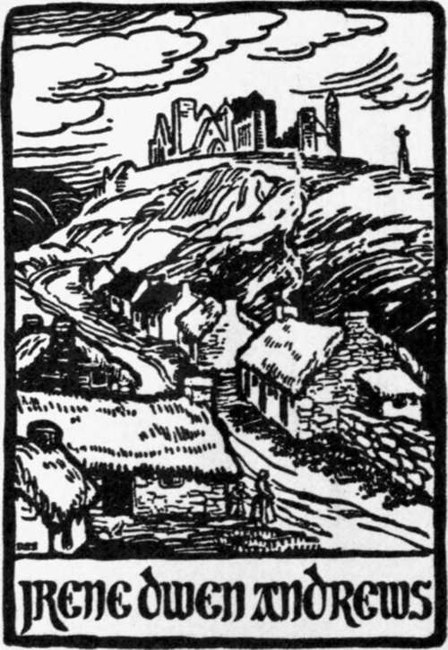

Preface
Description
This section is from the book "Legendary Fictions Of The Irish Celts", by Patrick Kennedy. Also available from Amazon: Legendary Fictions of the Irish Celts.
Preface
Though the subject of this volume seems light and frivolous enough, it might be preceded, and accompanied, and concluded by grave and tiresome dissertations ; and if our hopes were limited to its perusal by readers of an archaeological turn, we would freely exhaust all the philosophy of fiction in our possession upon them. But from our early youth we have felt the deepest interest in the stories and legends which are peculiar to the Irish, or which they possess in common with all the Indo-European races, and our dearest wish is that their memory should not fade from the minds of the people. They have existed in one form or other from long before the Christian era, and have been mainly preserved by oral tradition among the unlettered.
Taking into consideration the diminishing of our population by want and emigration, and the general diffusion of book-learning, such as it is, and the growing taste for the rubbishy tales of the penny and halfpenny journals, we have in these latter times been haunted with the horrid thought that the memory of the tales heard in boyhood would be irrecoverably lost. To prevent an evil of such magnitude (in our judgment to wit), we submitted some of the treasured lore to the editor of the Dublin University Magazine in the year 1862. Though his favourite walk in fiction, in which he is excelled by no living writer, admits only of the flesh and blood beings of our own times, he was not without sympathy for story tellers and story listeners who could be interested by the naive and broadly-defined personages of the household story. So the " Leinster Folk Lore " was allowed an appearance in that national magazine, and now, through the liberality of our present publishers, we look to the preservation of a portion of our light literature which would otherwise be probably lost.
If the large-souled man cannot look upon anything human as foreign to his sympathies, he cannot but feel interest in inventions which, however artless in structure, improbable in circumstance, and apparently destitute of purpose, have engrossed the attention of fireside audiences probably since the days of Homer. This leads us to hope for the approbation of thoughtful and comprehensive minds as well as of that of the young, and as yet unvitiated by the exciting and demoralizing pictures of unmitigated wickedness abounding in modern fiction.
The greater part of the stories and legends in this volume are given as they were received from the storytellers with whom our youth was familiar. A few of them thus heard we read at a later period, and in an improved form, in the Bardic historians and in MSS., some kindly furnished us by the late estimable archaeologist, John Windele, of Cork. No story in the present collection is copied either in substance or form from any writer of the present or past generation. The subjects of some have of course been already used by other collectors, but they and the present compiler had a common source to draw from.
But to occupy the reader's attention with a long preface to a volume of light reading, would be worse than keeping a hungry company from a simple and scanty meal by a prolonged grace. If a fastidious reader fails to take pleasure or interest in the mere tales, and experiences contempt for the taste of those ancestors of ours who could have relished them so much as they evidently did, perhaps he may be induced to search into the history, and the polity, and the social usages of those easily-pleased folk, and discover the cause of their want of critical acumen. In this case the acquisition of archaeological knowledge, more or less, will recompense the time lost in the perusal of a mere Folk's Book.
Dedication
To Joseph Sheridan Le Fanu, Esq.
Dear Sir,
I beg to offer this collection of Irish Legends to your acceptance, from respect for your high position among English writers, in consideration of your being a truly good man, and in gratitude for your kind encouragement of my own literary attempts. Without that encouragement I should probably never have an opportunity of penning a dedication to any one.
I am, dear Sir,
Your faithful Servant,
Patrick Kennedy.
Lough na Piastha Cottage.
Author Of "Uncle Silas," Etc.
Part I. Household Stories
Continue to:
Tags
fiction, Irish, Celtic myths, sacred text, St. Patrick, stories